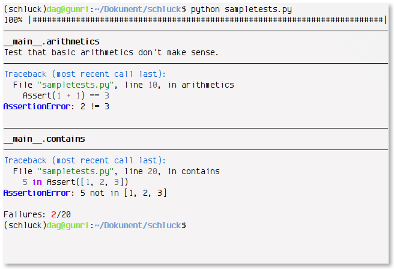

The Why
I’m not satisfied with the existing testing solutions.
- The standard unittest library is overly complicated and its API
doesn’t make sense for the problem it tries to solve. Classes are great
for inheritance and multiple instances but tests are merely collections
of callbacks. The use of camel case mixes badly with the code I’m testing
which always follows PEP 8.
- Nose has the right idea with the @istest decorator but as it’s not
actually collecting marked tests it has to discover them all, which means
you need a global namespace of tests if you’re going flat. Test discovery
relies on naming conventions and doesn’t really adhere to the idiom that
“explicit is better than implicit”. Setup and teardown of flat tests
doesn’t ensure isolation.
- Admittedly I haven’t tried py.test, but when I look at it I just see a big
mess of metaprogrammatic string-programming magic. Not my cup of tea.
In my mind, tests are:
- Applications. I want to write my tests like I write application code.
- Collections of callables that fail if they raise unhandled exceptions.
The Zen of Python applies to testing just as well as to any other code.
The How
The API is inspired by that of Flask, not for bandwagony reasons, but
because it’s a well-fit pattern for the problem of “collections of callables”.
Assertions are done with operator overloading; while I’m not usually too fond
of DSLs, I also find it difficult to
remember all the unittest assertion methods. Using the actual operators help.
from schluck import Tests, Assert
math = Tests()
@math.test
def arithmetics():
"""Ensure that the laws of physics are in check."""
Assert(1 + 1) == 2
math.run()
